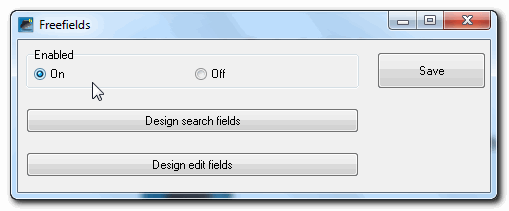
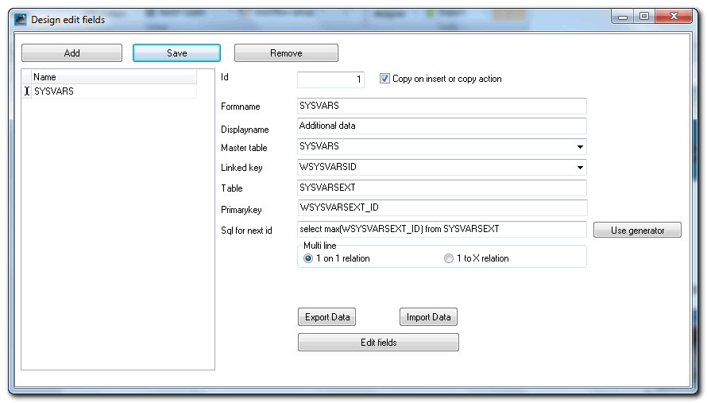
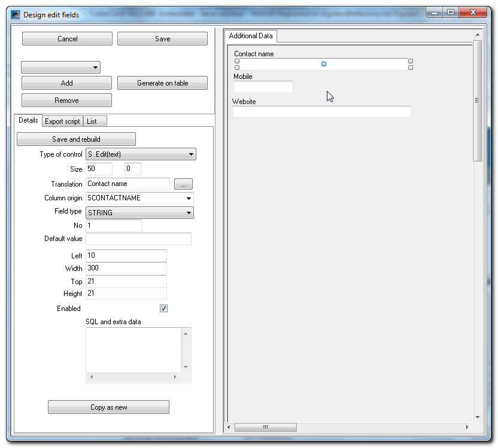
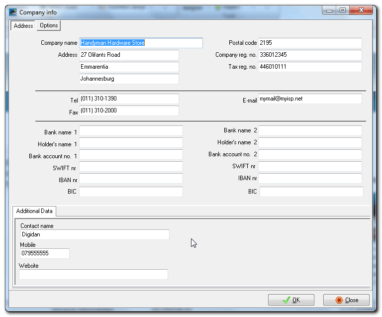
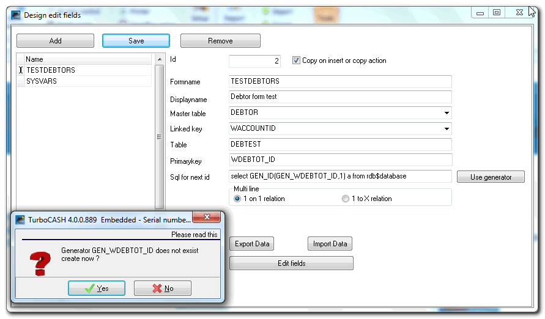
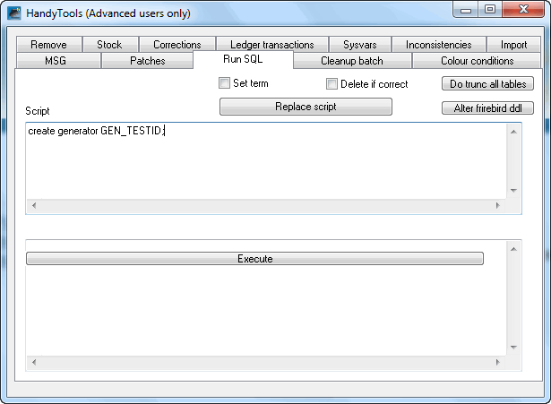
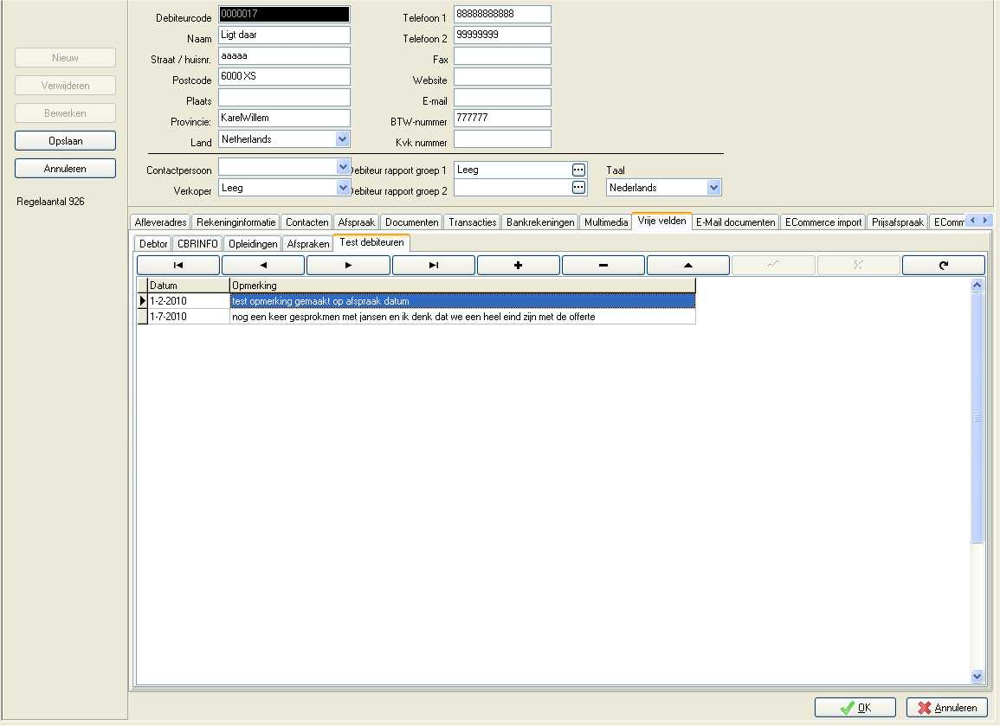
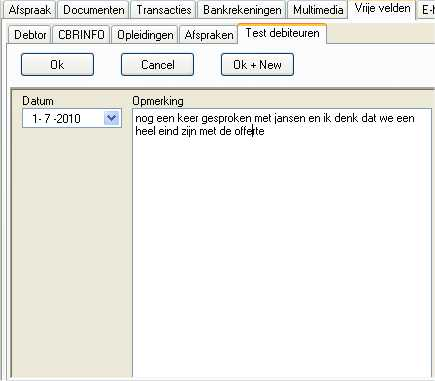

*Freefields plugin
Freefields plugin
|
Freefields plugin - Manual - Shop - Licence : Once-off - Translations : Outstanding |
Unlock endless customization possibilities with our Freefields Plugin. With a one-time licence, effortlessly add custom fields to stock items, creditors, debtors, and documents, tailoring your data management to your specific needs.
Key Features:
- Add custom fields to stock items, creditors, debtors, and documents.
- Enter data into custom fields for use in reports and layout files.
- Ideal for product name translation and multi-language invoices.
- Create personalised customer fields without the need for a full CRM application.
- Share custom fields with other Freefields Plugin users.
- Add the Freefields data in reports and layout files with the Report designer.
Enhance your data management and reporting capabilities with the Freefields Plugin, empowering you to create a customised financial environment tailored to your business requirements.
Using the Free Fields Plugin
Usage:
In the plugin you can define fields which can than be used to be filled with data.
In reports you can get the information of these fields.
Tips:
You can use it for productname translation, for multi-user language invoices.
Not up to a full CRM application yet? Create your own customer fields in osFinancials / TurboCASH.
Share your free fields with other osF free field users.
The free fields plugin allows you to create custom fields for basically any form (screen) in osFinancials / TurboCASH. The intention is that data will have their own table. This optimization is possible through the use of indexes. Referential integrity is also applied so that the data is and stays consistent. All benefits of a database is preserved and can be optimized locally. Using reportman you may add the data in a reports. These are fairly technical matters but you can try it before hiring our help.
Important:
Please make a backup of your Set of Books before using the Freefields pluin.
The possibilities in the Freefields plugin is endless. The data can be exported and imported. This can also be used for external data (from the other systems).
For example, using the Freefields plugin in osFinancials / TurboCASH, you could Add the make, model, year, of a motor vehicle, lessons a student can follow, credit details of a debtor (customer / client), etc.
The user of the system just enjoy updates to the core and Freefields and needs for standard frameworks which only some attributes are different or extra.
Special custom fields and powerful solutions can be added to the database at a fraction of normal development costs.
Activation
On the Setup ribbon, select Plugins → Generic → Freefields. If this plugin is not listed under Plugins → Financial tools, activate it via Tools → Activate plugins.

Select On to activate the Freefields plugin. You can activate Freefields and maintenance of search screens (Design search fields) and dialog (Design edit fields).
Design edit fields
If you click on the Design edit fields button you will see the following screen.
You probably have less free field definitions, but you can add more.

If you double-click on "SYSVARS" or click on the Edit fields button, you may add extra field. For example, if you click on the "Contact name" field, the options and settings for that field is displayed.

The options is as follows:
- Cancel: Cancel and go to the list.
- Save: Saves the layout in the database. If new fields are created, this process can not be undone. Pay close attention to the type and length of the field. These can not be readily modified once the field is created.
- Add: Adds a new control to these field and you can then edit.
- Remove: Delete active control.
- Save and rebuild: Save Input settings below so that you see it. When creating a new field (Colomn origin that does not exist), a field of type in Field type created. This is not just to remove this editor. We refer you to a database management tool like FlameRobin. FlameRobin allows you drop the fields. Alternatively, you may execute this by using SQL by example the command alter table mytable to enter the correct value. drop out mycolumn
- Type of control: You can choose from different types of controls so that interaction with that space is affected. Types are explained in the appendix at the back of this document. Choose the type of control for the correct data type. For example, A checkbox is a SMALLINT, a numeric value with decimal places a FLOAT, etc.
- Size: Set the size (width) adjusting this field is great for a text or numeric field (like big) once the field is defined in the database has no effect You will then have to build the large field in the database itself.
- Translation: Choose an existing translation or add one to the current database and use it. When you change the Language, the translated text or label will be displayed on the form.
- Column origin: Enter your new field name when creating a new control or choose from an existing list columns. For example, if you have a table designed, you can choose from this list the fields you want to edit.
- Field type: A new field (not existing name in Column origin) is used as this type is created. Depending on the type is then also taken along the Size.
- Default value: Default value may be a set. (For example, "select current_timestamp from rdb $ database" creates a date field – today as the default value for this field. This is usually combined with the head type a to-many relationship.
- Left, Width, Top, Height: Controls to set the width increases etc., Some controls do not have all the values. For example, you may set a memo type to enter multiple lines. When doing an edit, the height has no effect.
- Enabled: Set the field (temporarily). This usually comes at a migration in which old data e x a time are still visible.
- Sql and extra data: For some field types, this field is used, for example to build. The sql of a list with This is a dropdown filled with the correct value. For example, dressings can be used to build up a choice list. Think of a list box in a document that knows which debtor has been chosen and therefore can be used to limit. The list of possible choices the free fields of debtor.
The input fields for "Sysvars" is found in Setup → Company info.

Create freefields a more complex example

We will now take a more complex example. A new one to many relationship for a debtor. Here we create fields for the date and a memo field for the call.
Click the Add button and enter the following information.
- Formname: An internal name must be unique.
- Displayname: The name used for this tab. You can have multiple tabs with a single entity. this may then also contain a variety of relationships.
- Master table: The table to which this free fields are linked. When creating it is also used for reference integrity.
- Linked key: The key used in that table (primary key)
- Table: If this does not exist it will be created.
- PrimaryKey: The Primary key for a one to many relationship like this can be linked to the key for a one many will own generator should be used.
- Sql for next id: For one to many using the text "select GEN_ID (GEN_TESTID 1) from RDB $ DATABASE" as in the picture above.
If it's a one on one relationship space (dummy value) can be used to observe the linked key. Primary key equal.
If you have done this, press Save. A confirmation message to create the new table will be displayed.
You get that whether you want to create this table. Press Yes to add the table. The new fields this You can also select No hence, your input is not lost and you will be given the choice to create the table next time.
If the table is created, we can continue to add new fields by clicking the Edit fields button or double-clicking the name in the list.
To add the next control and enter the following:
- Type of control: D TDateTimepicker
- Size: Does not matter in this type
- Translation: Open the screen and looking to date.
- Column origin: ddate this is the name of the new field in the database.
- Field type: Date Time
- Default value: select current_timestamp from rdb $ database
Now press Save above the type of control. You will then whether the field can be created. Press Yes and move the control down slightly. Then press again Add new control to a second control to add.
- Type of control: M Memo Field
- Size: to 0 = infinite
- Translation: Look for Remark
- Column origin: SMEMO this is the name of the new field in the database.
- Field Type: Blob
- Default value: blank
- Left top width and height 120, 300, 18, 300, we want the input level increases.
Even with this, you answer Yes. Then press Save at the top and your work is saved.
Close active windows
Now close all windows of the free fields plugin. To do this, on the Setup ribbon, go to Tools → Close active forms.
Creating generator
You must now create the generator for generating a unique number for the table.
Open the Handy tools via Plugins → Generic → Handy tools, choose the "Run SQL" tab and enter it in the text
create generator GEN_TESTID;

Sql create generator GEN_TESTID processed!
If you press the Execute button, you have the generator created.
See the results
Open new window and select the debtors a debtor in the list. Press Edit to edit the Freefields tab in the tabs at the bottom of the debtor.

You should now see where you can enter multiple records. Extra tab there If you press the + sign, go to the detail screen.
Here you can contact moments capture and directly enter a new record or the current store.

Freefields Entities
With free fields can now associate the following entities to a free field layout.
- STOCK: Stock chart
- STOCK_DESCRIPTIONS: Inventory Description Table
- DEBTOR: Accounts Receivable
- CREDITOR: Creditors
- JOBCOST: Projects
- GROUPS: Groups
- GROUPS_DESCRIPTIONS: Group descriptions.
- EVENTS: Agenda appointments
- SYSVARS: Your company data or fixed dates.
There you can use different field types with different controls.
Special types are:
- STOCK_DESCRIPTIONS: a language is to define a layout. This so that a dropdown in a screen the English translations can pick up and the Dutch of the Dutch translation.
- GROUPS: For each group type is to define a layout. Group 1 in stock so other data can only be introduced by a group of debtors. This is mainly used to capture additional data for a webshop with product groups to think here at Search words etc.
- For these types, the language (STOCK_DESCRIPTIONS) id from GROUPS and GROUPS the WGROUPTYPEID of the specific group should be placed after the creation of the screen.
Freefields Controls
There are several controls available below the declarations and the use of it.
- M Memo - This control allows you to enter large blocks of text. Whether this is a STRING type and size length or a BLOB type with an endless length. With this control, it is possible to give up. An altitude
Field Type: STRING, BLOB
- B CheckBox - With this control you can make a checkbox function. This is the best type smallint but an integer or nummeric may also.
Field Type: Narrow Ribbon, Integer, Numeric
- IC CheckListBox - This control, you can create a checklist feature. The list is stored as a string, so you need to reserve enough space for the list.
Field Type: String
- IL ComboBox - Allows you to produce a dropdown list. This control can use different types of fields to write the data. Way in Usually, this lookup and so it is the type field is equal to that of the key from the lookup field and that is usually, but integer string may be:
Field Type: Integer, Narrow Ribbon, Float, String
- D TdateTimePicker - Date Control field type datetime, timestamp
Field type datetime, timestamp, String, float
- T Time - Time control field type datetime, timestamp
Field type datetime, timestamp, String, float
- Edit (text) - Text control for text input
Field Type String
- N Number - Enter numerical values (with a limit on the number of decimal places)
Field Type: Float
- F Float (numeric) - Enter numerical values with a number of decimal places
Field Type: Float
- OC lookup creditors - Special lookup for osFinancials / TurboCASH to link creditors. This is a quick search screen that are always stored in numeric fields.
Field Type: Integer
- OD Lookup Debtors - Special lookup for osFinancials / TurboCASH to link debtors. This is a quick search screen that are always stored in numeric fields.
Field Type: Integer
- OG Lookup GL accounts - Special lookup for osFinancials / TurboCASH to link general ledger accounts. This is a quick search screen that are always stored in numeric fields.
Field Type: Integer
- IP Lookup tax account - Special lookup for osFinancials / TurboCASH to link Tax (VAT/GST/Sales tax) accounts.
Field Type: Integer
- DB Lookup Bank Account - Special lookup for osFinancials / TurboCASH to link Bank accounts. This is a quick search screen that are always stored in numeric fields.
Field Type: Integer
- OS Lookup Stock accounts - Special lookup for osFinancials / TurboCASH to link stock items. This is a quick search screen that are always stored in numeric fields.
Field type: Integer
- OA Lookup all GL accounts - Special lookup for osFinancials / TurboCASH to link all accounts This is a quick search screen that are always stored in numeric fields.
Field Type: Integer